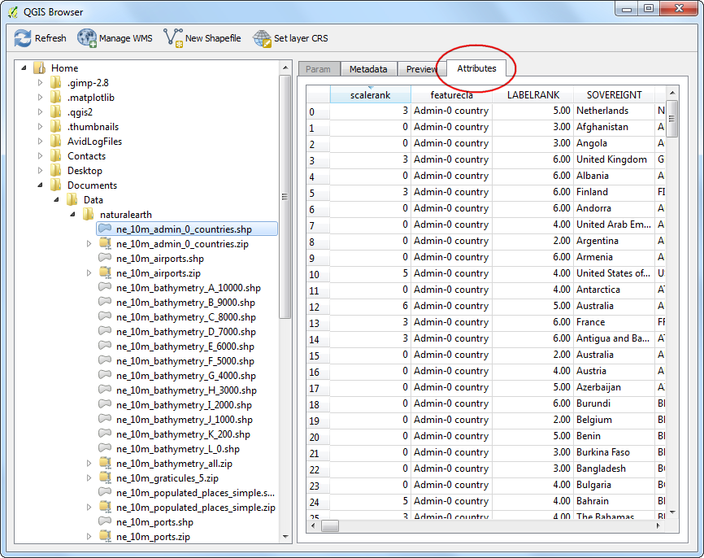

Utilizarea QGIS Browser
[ Download PDF A4 Letter ]
QGIS vine însoțit de o aplicație independentă numită QGIS Browser. Aceasta reprezintă un instrument însoțitor util pentru QGIS, și de ajutor în gestionarea seturilor de date GIS. Utilizatorii ArcGIS o pot vedea ca pe o aplicație similară cu ArcCatalog.
Localizați QGIS Browser
Aplicația Independentă QGIS Browser
QGIS Browser face parte din instalarea standard a QGIS.
Windows: Dacă ați instalat QGIS prin intermediul programului de instalare OSGEO4W, veți vedea QGIS Browser în meniul de start.
Mac: aplicația este localizată în QGIS.app/Contents/MacOS/bin/QGIS Browser.app. Puteți crea o legătură simbolică pentru această aplicație. Navigați la dosarul aplicației, faceți clic dreapta pe pictograma QGIS, apoi selectați Show Package Contents. Navigați la . Clic-dreapta pe pictograma QGIS Browser și apăsați Make Alias. Trageți QGIS Browser alias în folderul Applications. Din acest moment, puteți accesa QGIS Browser ca pe oricare altă aplicație.
Linux: Puteți lansa browser-ul QGIS cu ajutorul comenzii qbrowser. Acesta este situat în același director ca și aplicația QGIS.

Panoul Browser-ului din QGIS
Un mod convenabil de a accesa QGIS Browser este chiar din cadrul aplicației QGIS Desktop. Panoul navigatorului este situat în partea de jos a panoului stâng al QGIS. Apăsați pe fila Browser pentru a deschide QGIS Browser. Daca nu vedeți fila Browser, activați-o din (Windows și Mac) sau (Linux).

Procedura
Acum, vom explora unele caracteristici ale QGIS Browser. Comutați la aplicația independentă QGIS Browser. Navigați la directorul de pe sistemul dvs, în caresunt stocate datele GIS. Veți observa imediat avantajul folosirii navigatorului. În loc de a vedea toate fișierele suportate și datele non-spațiale, veți vedea doar straturile spațiale acceptate de QGIS. Faceți clic pe un strat pentru a-l selecta.

După ce selectați un strat, veți vedea metadatele în prima filă a panoului din dreapta. Puteți aduna rapid informațiile de bază cu privire la setul de date al acestui panou, cum ar fi numărul de entități, proiecția etc.

Dacă treceți la fila Preview, veți obține o previzualizare a setului de date. Aceasta este o modalitate rapidă de a determina modul în care arată setul de date, înainte de a-l deschide în QGIS.

Ultima filă este a Atributelor. Aici puteți vedea tabela de atribute a setului de date, pentru a vă face o idee despre câmpurile disponibile și despre valorile lor.

QGIS Browser vă oferă acces nu doar la straturile vectoriale și la imaginile de pe sistemul dvs., ci, de asemenea, la bazele de date și la resursele de rețea. Dacă utilizați orice date on-line prin intermediul WMS, puteți să le examinați rapid în navigator. Doar extinde locația WMS și veți vedea resursele pe care le-ați configurat. În mod similar, dacă aveți disponibile bazele de date PostGIS, SpatialLite sau MSSQL, le puteți accesa și pe acestea.

QGIS Browser are capacitatea de a naviga și de a deschide direct fișierele zip. Navigați la orice folder care conține fișiere zip. Veți vedea că fișierele zip apar similar unui set de date, putându-le examina la fel ca pe oricare alt set de date.

O altă caracteristică utilă o reprezintă abilitatea de adăugare a anumitor foldere din sistemul dvs., în lista Favorites. Clic-dreapta pe orice folder și selectați Add as a favorite.
Note
Adăugarea unui folder în lista de favorite, funcționează, în prezent, numai din panoul navigatorului din QGIS. Această facilitate nu este disponibilă în aplicația independentă.

După adăugarea locației ca favorită, o puteți accesa rapid din folderul Favorites al navigatorului.

După ce ați selectat stratul, aveți posibilitatea să faceți dublu-clic pe el, pentru a-l vedea în QGIS. De asemenea, puteți să trageți și să aruncați stratul, direct pe suprafața de prezentare a hărții.

Puteți comuta înapoi în panoul Layers din partea de jos a panoului stâng al QGIS, pentru a vedea stratul adăugat.